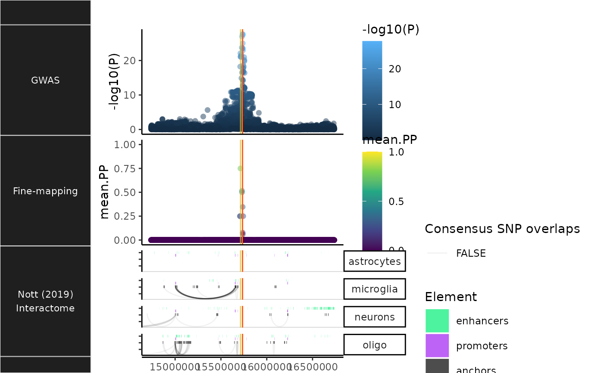

R/NOTT2019_plac_seq_plot.R
NOTT2019_plac_seq_plot.RdPlot brain cell-specific interactome data from Nott et al. (2019).
NOTT2019_plac_seq_plot(
dat = NULL,
locus_dir = NULL,
title = NULL,
show_plot = TRUE,
save_plot = TRUE,
return_interaction_track = FALSE,
x_limits = NULL,
zoom_window = NULL,
index_SNP = NULL,
genomic_units = "POS",
color_dict = c(enhancers = "springgreen2", promoters = "purple", anchors = "black"),
highlight_plac = TRUE,
show_regulatory_rects = TRUE,
show_anchors = TRUE,
strip.text.y.angle = 0,
xtext = TRUE,
save_annot = FALSE,
point_size = 2,
height = 7,
width = 7,
dpi = 300,
return_as = "Tracks",
nThread = 1,
verbose = TRUE
)Fine-mapping results data from finemap_loci.
Locus-specific directory.
all title elements: plot, axes, legends (element_text();
inherits from text)
Print plot.
Whether to save the plot.
Return only the interaction track (before completing the plot and showing it).
x-axis limits to be applied to all plots (useful when trying to keep a common coordinate system).
Zoom window.
Index/lead SNP RSID.
Which genomic units to return window limits in.
Named list of colors for each regulatory element.
Whether to scale opacity of PLAC-seq interactions
(arches) such that interactions with anchors containing Consensus SNPs
will be colored darker (Default: TRUE).
If FALSE, will instead apply the same opacity level
to all interactions.
Show enhancers/promoters as rectangles.
Show PLAC-seq anchors.
Angle of the y-axis facet labels.
Whether to include x-axis title and text.
Save the queried subset of bigwig annotations.
Point size of each SNP in the GWAS/fine-mapping plots.
height (defaults to the height of current plotting window)
width (defaults to the width of current plotting window)
dpi to use for raster graphics
Plot class to convert plot_list to:
Number of threads to parallelise downloads across.
Print messages.
Other NOTT2019:
NOTT2019_bigwig_metadata,
NOTT2019_epigenomic_histograms(),
NOTT2019_get_epigenomic_peaks(),
NOTT2019_get_interactions(),
NOTT2019_get_interactome(),
NOTT2019_get_promoter_celltypes(),
NOTT2019_get_promoter_interactome_data(),
NOTT2019_get_regulatory_regions(),
NOTT2019_superenhancers(),
get_NOTT2019_interactome(),
get_NOTT2019_superenhancer_interactome()
trks_plus_lines <- echoannot::NOTT2019_plac_seq_plot(dat = echodata::BST1)
#> NOTT2019:: Creating PLAC-seq interactome plot
#> ++ NOTT2019:: Getting promoter cell-type-specific data.
#> ++ NOTT2019:: Getting interactome data.
#> ++ NOTT2019:: Getting regulatory regions data.
#> Importing Astrocyte enhancers ...
#> Importing Astrocyte promoters ...
#> Importing Neuronal enhancers ...
#> Importing Neuronal promoters ...
#> Importing Oligo enhancers ...
#> Importing Oligo promoters ...
#> Importing Microglia enhancers ...
#> Importing Microglia promoters ...
#> Converting dat to GRanges object.
#> ++ NOTT2019:: Getting interaction anchors data.
#> Importing Microglia interactome ...
#> Importing Neuronal interactome ...
#> Importing Oligo interactome ...
#> Converting dat to GRanges object.
#> 29 query SNP(s) detected with reference overlap.
#> Converting dat to GRanges object.
#> 49 query SNP(s) detected with reference overlap.
#> Converting dat to GRanges object.
#> Preparing data for highlighting PLAC-seq interactions that overlap with SNP subset: Support>0
#> Initializing PLAC-seq plot.
#> ++ Adding enhancer/promoter rectangles
#> Creating GWAS track.
#> Creating fine-map track.
#> x_limits will be used to limit the min/max x-axis values for all plots.
#> Converting plots to a merged ggbio Tracks object.
#> Adding vertical track lines for LeadSNP and Consensus_SNP
